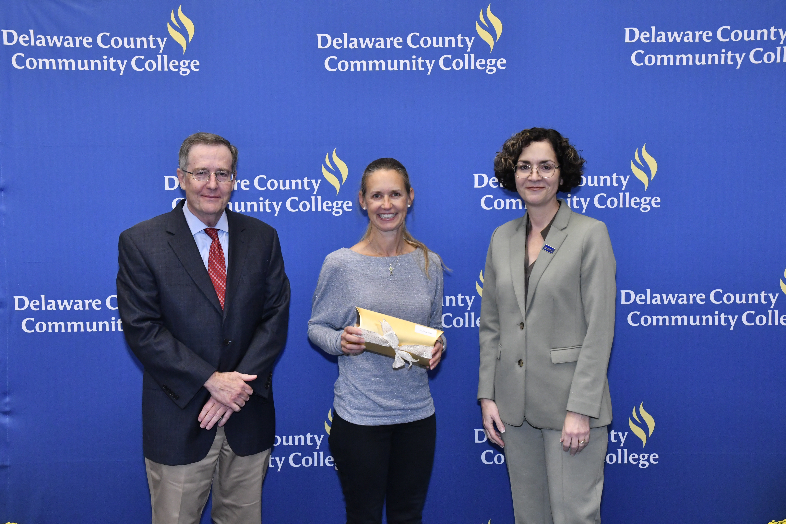

About
Ann-Marie M. Smith has been a professor of Computing Science at Delaware County Community College since 1999. She serves as CS Coordinator for the Business, Computing and Social Science Department and as Chair of the CS Advisory Board, roles that keep her teaching and program leadership closely connected to the employers and transfer partners her students go on to.
Her teaching focuses on multimedia, web technologies, and AI-assisted learning. She holds an Ed.D. in Higher Education Leadership and Innovation from Wilmington University (2020); her dissertation examined infusing virtual reality into world civilizations courses at the community college level. She also earned an M.S. in Instructional Technology and a B.A. in Communications and History.

At DCCC
Professor of Computing Science since 1999
Leadership
CS Coordinator, Business, Computing and Social Science Department; Chair, CS Advisory Board
Education
Ed.D., Wilmington University (2020) M.S. in Instructional Technology B.A. in Communications and History
Teaching & Programs
Program Leadership
Dr. Smith leads the design, development, implementation, and assessment of Computing Science certificates and associate career and transfer degree programs, including the recent AI Foundations and Specialist certificates, which bring artificial intelligence coursework into the college's computing pathways.
Quality Matters Courses
Her online courses are developed to Quality Matters standards. The following courses hold QM certification:
- CS 100
- CS 250
- IMM 110
- IMM 120
- IMM 201
AI in Teaching
Artificial intelligence is part of Dr. Smith's everyday teaching practice. She works with AI tools and agents in the classroom and in course design, and she presents on what these tools mean for today's students, including a recent presentation on ChatGPT and Gen Z.
- ChatGPT
- Gemini
- Copilot
- NotebookLM
- Claude
- Muse
- Colab
Selected Publications
-
“Transforming CS 100: A Collaborative Approach to Boosting Engagement and
Mastery in Information Technology”
-
“Meeting the Needs of Students with Adaptable Solutions”
Grants & Awards
Grants
-
2023
DCCC Faculty Innovation Grant
-
2017
Pennsylvania Department of Labor & Industry Strategic Innovation Grant
-
2009
DCCC Educational Foundation Mini-Grant
-
2006
DCCC Educational Foundation Mini-Grant
Awards & Recognition
- 2024 Lindback Award for Distinguished Teaching
-
2023
Certifying Adobe Skills in Your Classroom
-
2022
Audience-Centered Teaching
Service, Outreach & Presentations
Service & Outreach
- Committee member, Middle States Commission on Higher Education Standard VII
- Advisor, DCCC Tabletop RPG Club and Video Game & Anime Club
- Organizer, Discover DCCC Day and employer visits with Evolve IP, Amazon, and Wilmington University
- Presenter, Girls Go Tech (Girl Scouts) and Girls Exploring Tomorrow's Technology (GETT)
Selected Presentations
- “ChatGPT, Gen Z, and the University”,
- Sessions on ChatGPT,
- Sessions on online teaching and e-Portfolios,
Contact
Students, colleagues, and partners are welcome to get in touch by email or phone.